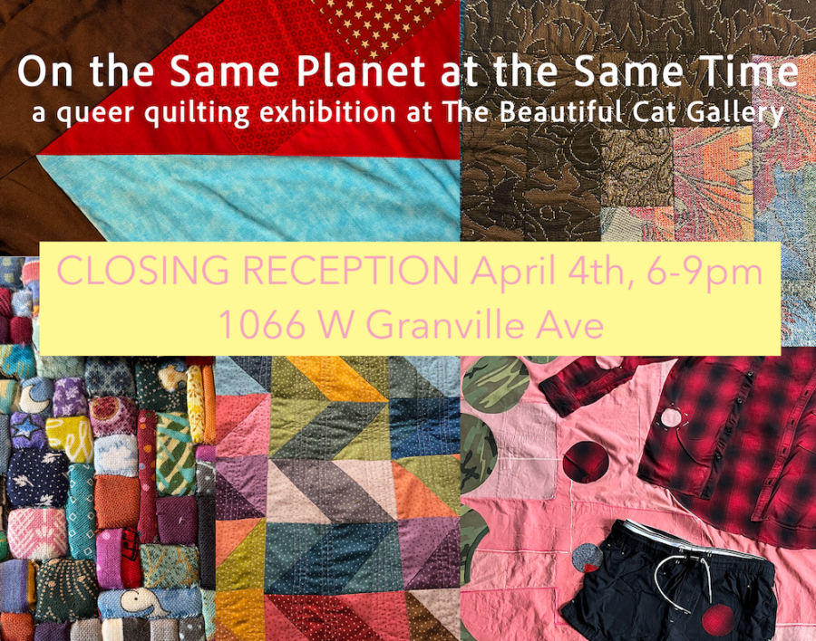

On The Same Planet at the Same Time: Closing Reception and Skill Share
Closing reception for On The Same Planet at The Same Time, our queer quilting collective exhibition at The Beautiful Cat Gallery!
April 4, 6-9pm, with a skill share 6-7, artist tour at 7 and party till 9 – Skill share will be multiple stations with hands-on activities led by the six exhibiting artists, giving short demonstrations of different techniques and letting you try the craft. – Artist tour starts at 7:00 when we wrap the skill share, and will last as long as needed as we visit each quilt as a group and listen to the quilters talk about process and inspiration. – Party continues after the tour, with free snacks and drinks, and vibes from the queer quilting collaborative playlist. – Full color Catalogs will be for sale and you can get yours signed by the queer quilters themselves.
Gather at The World Music Foundation Listening Room at 1066 W Granville (next to the gallery windows) to celebrate the show with us!
Quilts by Beni Batiste, Tiffany M. Favers du Shine, Eleanor Mulshine, Diego Rancel, Mariel Rancel, and Philip Smith, curated by Eliza Fernand